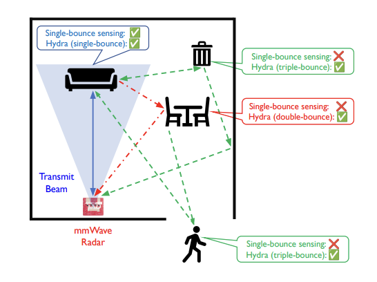

Project Hydra: Exploiting Multi-Bounce Scattering for Beyond-Field-of-View mmWave Radar
|
 |
|
|
| In this paper, we ask, “Can millimeter-wave (mmWave) radars sense objects not directly illuminated by the radar – for instance, objects located outside the transmit beamwidth, behind occlusions, or placed fully behind the radar?" Traditionally, mmWave radars are limited to sense objects that are directly illuminated by the radar and scatter its signals directly back. In practice, however, radar signals scatter to other intermediate objects in the environment and undergo multiple bounces before being received back at the radar. In this paper, we present Hydra, a framework to explicitly model and exploit multi-bounce paths for sensing. Hydra enables standalone mmWave radars to sense beyond-field-of-view objects without prior knowledge of the environment. We extensively evaluate the localization performance of Hydra with an off-the-shelf mmWave radar in five different environments with everyday objects. Exploiting multi-bounce via Hydra provides 2-10x improvement in the median beyondfield-of-view localization error over baselines. |
Citation
- Hydra: Exploiting Multi-Bounce Scattering for Beyond-Field-of-View mmWave Radar, Nishant Mehrotra, Divyanshu Pandey, Ashutosh Sabharwal, Akarsh Prabhakara, Yawen Liu and Swarun Kumar, MobiCom 2024 [PAPER]